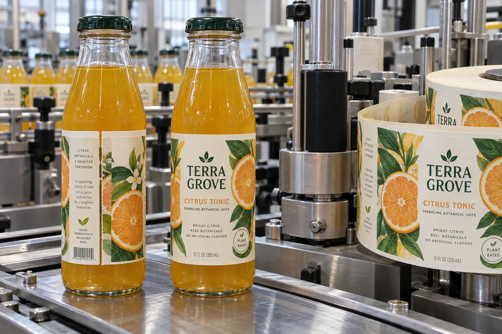

An overlap can fit the bottle circumference and still leave an unanswered material question. The adhesive under the trailing edge may contact the leading label's printed or protected face rather than the original bottle surface.
Specify both contact interfaces before approving the overlap construction. A proposal based only on adhesion to the bottle leaves the seam surface outside the brief.

AI-generated illustration retained on this article only. Fictional packaging, equipment and details; no measured result or actual customer/factory record.
Mark the actual landing zone
On the artwork and a physical layout sample, identify where the trailing edge lands. Record the width and location as proposed geometry rather than a universal recommended overlap. Ask the converter to identify the face material, print and finish present in that zone.
The leading face may have ink, varnish, laminate, a decorative effect or an intentionally unprinted area. Do not infer its surface from the color visible in a photograph. A clear coating is still a supplied layer, and an apparently plain area can differ from an untreated face stock.
| Interface | Proposed contact | Information to confirm |
|---|---|---|
| Main label to bottle | Adhesive against container | Bottle identity, surface condition and intended use |
| Trailing edge to leading face | Adhesive against the supplied label finish | Exact landing zone and represented ink/coating/laminate |
| Artwork at seam | Visible or concealed information | Required reading order and content kept outside the covered area |
| Evidence sample | Complete printed and finished construction | What matches the order and what remains different |
| Change control | Revised finish or seam position | Responsible reviewer and affected evidence |
This comparison sheet defines the question for the supplier. It does not claim that a given adhesive will bond to every printed film or that all varnishes behave alike.
Compare a representative seam, not two unrelated samples
A plain material strip can help communicate layout, but it cannot represent an overlap onto a finish it does not carry. Ask whether the proposed evaluation sample includes the actual leading-face treatment and the intended trailing adhesive. List substitutions so a successful appearance review is not silently promoted into construction approval.
Keep use conditions explicit. Handling, waiting time and the relevant exposure sequence belong in the agreed evaluation plan where applicable. Do not invent a universal dwell period or test threshold. The converter and packaging owner need to agree how the intended seam will be assessed and who can release it.
Recheck the interface after a finish change
A later matte-to-gloss change may leave the dimensions unchanged while changing the surface at the overlap. Highlight that change to the supplier instead of treating it as an artwork-only revision. Likewise, moving the landing zone can place the adhesive on a different printed or coated region.
For a gap design, document that no adhesive-to-label-face overlap is intended, then review exposed container area and appearance on their own terms. Gap and overlap options should be compared with the same filled bottle and content requirements rather than assumed equivalent because both fit a digital drawing.
Use protective-layer scope to identify a finish, small-radius wrapping for a different edge-lift condition and cut size planning for the physical label footprint.
A wrap label has two ends, not one uninterrupted canvas
A full-wrap brief should identify where the artwork is intended to meet. That small question changes the dieline, bottle proof and sometimes the material choice. A designed gap can be clean; an accidental one looks like a production error. An intentional overlap may hide a tolerance, but too much extra thickness can look untidy. There is no universal millimeter value that fixes every bottle.
HERMA describes wraparound labeling as a process where dispense accuracy and bottle movement matter. The exact seam tolerance should therefore come from the specific container and applicator, not a catalog sketch.
Two bottlers with different priorities
Consider a composite cold-pressed juice brand with clear glass and a visible fruit illustration. A planned narrow gap on the back may preserve a crisp front and avoid hiding copy. A buyer could place the gap where it looks deliberate and keep the barcode on a stable section of the wrap.
A second composite bottler uses opaque PET, fast machine application and artwork with an all-over pattern. It may prefer a controlled overlap so slight circumference variation does not reveal the bottle. That is reasonable only after the overlap looks acceptable and the machine handles the label thickness. A buyer could not promise it from the art file.
Measure the actual label path
Measure circumference where the label will sit, not at the widest shoulder. Check multiple production bottles and the shape along the whole label height. If the sidewall tapers, a straight rectangle may drift or wrinkle even when its width is correct. The bottle finish, application temperature and whether the bottle is wet or dry also belong in the trial brief.
| Decision | Proof question |
|---|---|
| Planned seam gap | Does it read as deliberate on every bottle lot? |
| Controlled overlap | Is the edge flat and visually acceptable after handling? |
| Artwork repeat | Do graphics and required text stay clear of both ends? |
| Barcode zone | Does the finished bottle scan under the intended conditions? |
| Roll specification | Do gap, direction, core and speed suit the applicator? |
Approve a moving line, not just a hand-applied sample
Ask for a short run using the intended printed stock, adhesive and finish. Rotate several finished bottles: front, seam, back and barcode. Keep good and poor samples with the machine settings. If the seam slowly walks around the bottle, investigate bottle handling and dispensing before changing artwork repeatedly.
Give the converter a seam brief
- Several real bottles and the target label height.
- Preferred visible gap or overlap, marked on a finished sample.
- Artwork safe areas at both ends and barcode placement.
- Application method, line speed and roll direction.
- Acceptance photos from the trial under normal lighting.
For the initial format choice, see front/back versus wraparound labels. If the bottle narrows along the label zone, read our tapered-bottle fit guide.
Send the relevant project details
Discuss the proposed wraparound seam with bottle dimensions/reference, seam layout, intended overlap landing zone, offered face/finish and use conditions. The form opens an email draft; use listed email or WhatsApp for files. Sample scope and performance acceptance need confirmation.